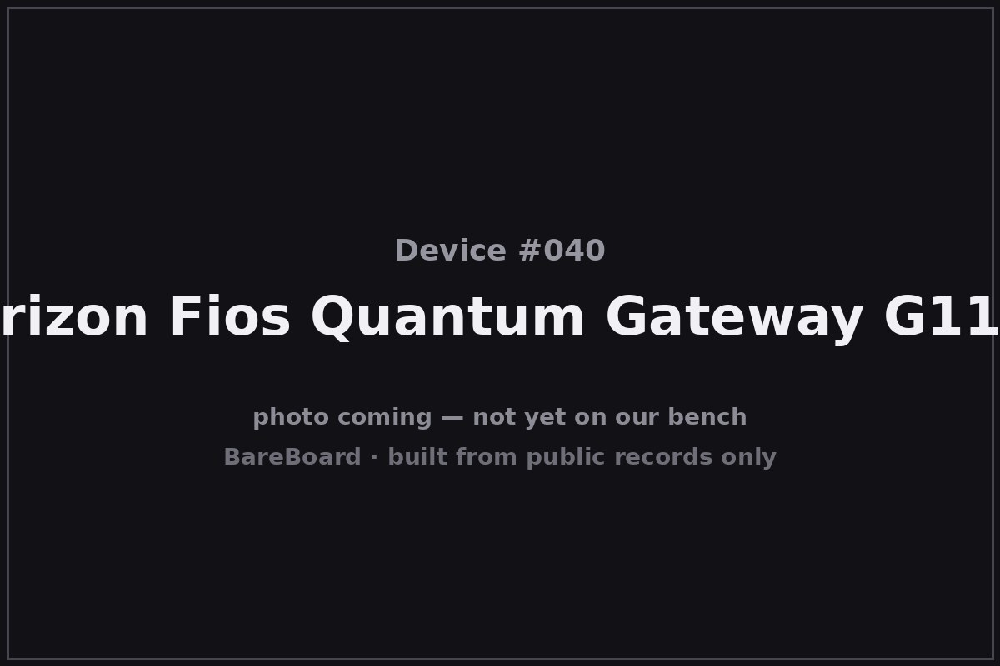

The Autopsy Report · Device #040
The Verizon FiOS Quantum Gateway G1100
The gateway that came with the fiber — Wi-Fi, MoCA, and a quiet 900 MHz radio, all in the box Verizon handed you.
What is this thing?
The Verizon FiOS Quantum Gateway G1100 is an ISP-provided residential gateway — the box Verizon gave FiOS customers with their fiber install. It's a triple-play device: dual-band 802.11ac Wi-Fi, four gigabit Ethernet ports, and MoCA (Multimedia over Coax Alliance) networking over the home's existing coax — for both WAN (from the ONT) and LAN (to set-top boxes). It also carries a 900 MHz-class radio (908.4–916.0 MHz in the filing) alongside its Wi-Fi bands. G1100 user manual FCC filing
Who made it? The public record is thin on the OEM: the authorization is FCC ID 2ABTEG1100, granted in 2014, with changes in 2016. We do not name a manufacturer or a chipset in this report — the evidence isn't there, and we don't fill gaps with guesses. FCC filing
Not on our bench (yet)
This device is not on our bench. We have never owned, opened, photographed, measured, or powered on the FiOS G1100. Everything in this report comes from public records: government filings, manufacturer documents, manuals, and credible public teardowns and hardware databases. Where a fact would require holding the hardware in our hands — our own photos, our measurements, our boot logs, the exact board revision of a future unit — we say so, out loud, and mark it unknown. Nothing here is presented as first-hand BareBoard evidence.
That constraint is also the point: you can learn a remarkable amount about a device without ever touching it, because the public record is deep. What follows is everything the record could tell us — and an honest map of where the record runs out.
A short history
- 2014-03-31The FCC grants equipment authorization 2ABTEG1100 for the FiOS Quantum Gateway — dual-band Wi-Fi plus the 908.4–916.0 MHz radio and MoCA. FCC filing
- 2014–2015The G1100 ships as Verizon's flagship FiOS gateway: 802.11b/g/n/ac, IPv4/IPv6, MoCA WAN/LAN, four gigabit LAN ports, 12 V/3 A power. G1100 user manual
- 2016Changes to the authorization are filed; the gateway continues as the standard FiOS install through the mid-2010s. FCC filing
The outside
A tall black tower — roughly 1.87 × 10 × 7.4 inches, 1.56 lb — with a single front status LED and a clean, vented shell. The rear carries four gigabit LAN ports, one gigabit WAN/Internet port, coax (MoCA), two USB ports, power, and the reset button. G1100 user manual

Designed to stand next to the TV and be ignored — which, for ISP equipment, is the highest compliment.
The board
Here's the honest version: we don't know what's on this board. No verified public source names the G1100's SoC, its radio chips, or its memory — and this report does not guess. The manual confirms the feature set (802.11b/g/n/ac, IPv4/IPv6, MoCA WAN/LAN) and the physical facts (dimensions, weight, 12 V/3 A power); the filing confirms the radio bands and conducted powers. The silicon inside remains a blank in the public record. G1100 user manual FCC filing
That blank is itself worth stating: for a device installed in millions of homes, the public hardware record is remarkably thin. If a unit ever reaches our bench, the chip table below gets written from silicon instead of left empty.
Under the microscope: the chips
No verified chip identities exist in the public record for the G1100. Rather than invent a table, we say so — and list what the record does confirm.
| Chip | What it does | How we know | Dig deeper |
|---|---|---|---|
| Main SoC unidentified | Unknown — no verified public source names it. | Unknown Not named in any public source we could verify. Bench work required. | FCC filing |
| Radio chips unidentified | Unknown — no verified public source names them. | Unknown Not named in any public source we could verify. Bench work required. | FCC filing |
| Flash / RAM unidentified | Unknown — no verified public source names them. | Unknown Not named in any public source we could verify. Bench work required. | FCC filing |
We considered leaving this table out entirely; we kept it because an explicit “unknown” is more honest than silence. Everything else on this page that can be sourced, is.
The government's file on this box
The government's file on this gateway is public under FCC ID 2ABTEG1100, granted March 31, 2014, with changes filed in 2016. FCC filing
- Bands: the filing covers 908.4–916.0 MHz plus the standard 2.4 GHz and 5 GHz Wi-Fi bands — that sub-GHz radio is the G1100's most unusual public fact.
- Lab power figures (each tied to its own grant): ~371 mW and ~357 mW entries in the main filings, with DFS-band entries of ~70/~63/~97 mW — we don't blend grants into a single number.
- Manual: the user manual in the filing record confirms the feature set and physical specs (below).
Browse it yourself: filing page — the manual: user manual (mirror)
Service, recovery, and debug modes
We listen, we don't knock: this section documents only that service or recovery modes exist in the public record, and what kind of thing they are — never how to defeat a lock.
The user manual documents a reset button that restores factory defaults when held for at least three seconds — the standard manufacturer-documented recovery path. G1100 manual (reset) Existence and purpose only; no procedure beyond the manual's own description.
We found no public record of a serial console, bootloader recovery mode, or other debug interface for the G1100. Unknown until a bench says otherwise.
What the public record shows
The 900 MHz radio is the story. Most gateways in this batch are Wi-Fi plus Ethernet; the G1100's filing adds 908.4–916.0 MHz — sub-GHz spectrum typically used for IoT and home-automation traffic. It's the most unusual radio in the Hot 100 networking batch, and it's public record.
MoCA is the quiet backbone. The gateway's coax networking — WAN from the ONT, LAN to set-top boxes — is a whole second network most owners never knew they had. The manual documents it plainly; the house's coax was doing double duty.
Thin records are a finding, not a failure. Millions of these shipped, yet no verified public source names the silicon. ISP-supplied gear often has the thinnest public hardware record — the customer never chose it, so nobody wrote it up. That asymmetry is worth noticing.
What we didn't do
- We never had a unit, so we took no photographs and no measurements.
- We never opened an enclosure or lifted an RF shield.
- We never captured a boot log or probed a debug port.
- We never extracted, modified, redistributed, or ran the device's firmware.
- We never defeated a lock, bypassed authentication, or recovered credentials or keys — and we publish none.
- We never tested an exploit or a vulnerability against any device.
- Anything below marked Unknown stays unknown until a unit reaches our bench.
By the numbers
- Device: Verizon FiOS Quantum Gateway G1100
- Era: 2014–late 2010s
- FCC ID: 2ABTEG1100 (granted 2014-03-31; changes 2016)
- Wireless: 802.11b/g/n/ac dual-band + 908.4–916.0 MHz radio + MoCA over coax
- Conducted power (per grant): ~371 mW / ~357 mW (main filings); ~70/~63/~97 mW (DFS entries)
- Ports: 4× gigabit LAN, 1× gigabit WAN, coax (MoCA), 2× USB
- Size / weight: ~1.87 × 10 × 7.4 in; 1.56 lb
- Power: 12 V / 3 A
- Silicon: Unidentified in the public record
Words to know
Every term this page uses, in plain English. No prior knowledge required.
- Residential gateway
- One box that connects your home network to the internet and shares it — modem, router, and Wi-Fi access point combined.
- MoCA
- Multimedia over Coax Alliance — networking over the coax cables already in the walls, used here for both the fiber uplink and the TV boxes.
- ONT
- Optical network terminal — the fiber box on the wall where Verizon's fiber becomes your home's signal.
- Sub-GHz radio
- A radio below 1 GHz (here, ~900 MHz) — longer range and better wall penetration than Wi-Fi, typically for IoT devices.
- DFS
- Dynamic frequency selection — 5 GHz channels shared with radar, where the router must listen before transmitting.
- IPv6
- The newer internet addressing standard, supported alongside IPv4 on this gateway.
- FCC ID
- The ID the FCC assigns to each approved wireless product. Punch it into fccid.io and the whole public filing comes up.
Sources & confidence
- FCC equipment authorization 2ABTEG1100 (grant 2014-03-31, changes 2016; bands incl. 908.4–916.0 MHz; conducted powers ~371/~357 mW and DFS ~70/~63/~97 mW per grant): primary evidence. High confidence.
- Feature set (802.11b/g/n/ac, IPv4/IPv6, MoCA WAN/LAN, 4× gigabit LAN), dimensions (1.87×10×7.4 in), weight (1.56 lb), power (12 V/3 A): the G1100 user manual in the filing record. High confidence.
- Reset button restores factory defaults (hold ≥3 s): the user manual. High confidence in the existence claim.
- No verified public source names the SoC, radio chips, or memory — no OEM named; stated as an explicit gap. No manufacturer-published debug/recovery documentation located.
Anything not listed here is unknown until the bench says otherwise. We'll say so, out loud, when that's the case.
Legal note. BareBoard is an educational project. This page is built entirely from public records — government filings, manufacturer documents, and published third-party research — about hardware we have never possessed. We don't publish, host, or distribute firmware, keys, passwords, or credentials, and nothing here is instructions for defeating a lock or an authentication check. Product names and trademarks belong to their respective owners and appear here only to identify the hardware. If you believe anything here infringes your rights, contact us and we'll address it promptly.